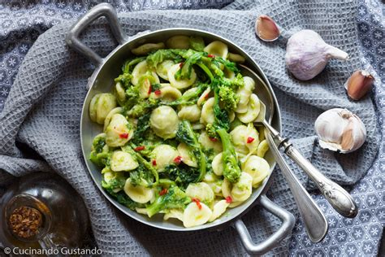

Apulia
Overview
Apulia is a region in southeastern Italy known for its stunning coastline, picturesque villages, and unique architecture like the trulli of Alberobello. It’s a popular destination for seaside holidays, traditional cuisine, and cultural heritage.
Quick Facts
- Capital: Bari
- Language: Italian
- Population: About 4 million
- Famous for: Trulli, beaches, olive oil, cuisine
- Fun fact: Apulia has the longest coastline of all Italian regions!
Popular Dishes
Orecchiette with turnip tops

Focaccia Barese
Bombette

Panzerotti
Famous Places
Trulli of Alberobello
Castel del Monte

Lecce

Castellana Caves
Ostuni

When to Visit
Apulia is perfect to visit in spring and summer (May–September) for beaches and local festivals. Autumn offers mild weather and fewer crowds.
Regional Symbols
- Flag:
- Coat of arms: